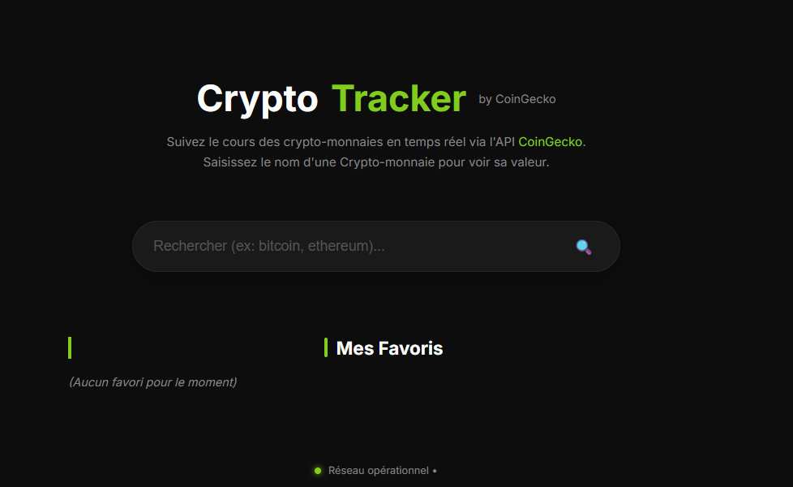

S1

S1.02 – Algorithmes
Optimisation de dépêches.
En savoir plus →
Optimisation de dépêches.
En savoir plus →
Création d'un site vitrine pour Econocom.
En savoir plus →
Analyse d'accidents PACA.
En savoir plus →
RPG tactique au tour par tour.
En savoir plus →
App lourde de gestion d'événements.
En savoir plus →
Plateforme d'aide aux seniors.
En savoir plus →
Suivi cryptos via API CoinGecko.
En savoir plus →
E-commerce boutique en ligne Symfony.
En savoir plus →
App Android éducative.
En savoir plus →
Projet personnel pour mon Anniversaire
En savoir plus →
Ce que vous êtes en train de regarder
En savoir plus →
Développement d'un site pour l'ACO.
En savoir plus →
Conception d'algorithmes de tri de dépêches via des lexiques optimisés. L'objectif était de minimiser la consommation de ressources tout en améliorant la performance de traitement sur de grands volumes de données textuelles.
Réalisation d'un site vitrine pour ECONOCOM, conçu pour attirer et informer des stagiaires de troisième. Attention portée à l'UX, l'accessibilité et le responsive design.
Nettoyage, modélisation et analyse statistique d'un jeu de données d'accidents routiers en région PACA. Utilisation de R pour les statistiques descriptives et SQL pour les requêtes. Visualisation des résultats et formulation de recommandations argumentées.
Conception et développement de ce portfolio interactif pour centraliser mon parcours académique, mes projets et faciliter ma prise de contact professionnelle. Design néon sombre, animations au scroll et modales accessibles.
Développement en Java d'un RPG tactique au tour par tour inspiré de l'univers de Faërun. Fonctionnalités : système de combats entre des elfes et des nain, architecture orientée objet.
Application lourde de gestion d'événements en Java & JavaFX. IHM avancée, tests unitaires JUnit et architecture MVC.
Plateforme web de maintien à domicile pour seniors et aidants : agenda collaboratif, chatbot IA en PHP pur, et gestion des intervenants via une messagerie. Développement full-stack PHP/JS/HTML/CSS, déploiement sur VPS OVH.
Application e-commerce complète avec Symfony 7 : catalogue par catégories, panier en session, authentification sécurisée, gestion des commandes et historique usager.
Rénovation d'une application Android éducative pour les élèves de primaire : audit, refactoring, normalisation BD (3NF), amélioration de l'ergonomie et ajout de fonctionnalités.
Application web pour gérer les invitations de mes 20 ans : formulaire d'inscription, persistance en temps réel via Supabase (PostgreSQL cloud), et page d'affichage des présents avec galerie photo.
Stage en cours axé sur le développement web WordPress : conception, refonte et maintenance de sites clients, développement de thèmes et plugins, optimisation des performances et de l'accessibilité.